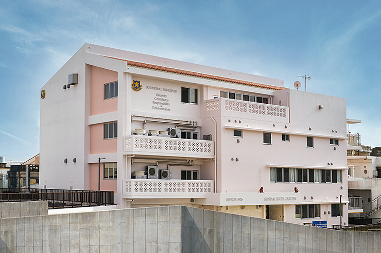

文化祭（育英祭）は仙台育英学園沖縄高等学校で毎年行われてます。
前回は今の2年生とその関係者しか参加できませんでしたが、今回の第二回育英祭では1年生も参加しているので、去年よりも多くの人が参加しました。
今回の育英祭の出し物紹介
駐車場
駐車場ではベビーカステラ・綿あめ、お団子・沖高カレー・スムージー・ドーナツが販売されました。
一階・二階
一階・二階ではeスポーツの体験や投資部の体験が出来ます。
他校にはあまり見られない部活なのでここでしか出来ない新鮮な体験の一つです。
三階
三階の教室1では全日制の1・2年生が共同制作したお化け屋敷、教室2ではタピオカを提供しており、教室3では日ごろの生徒たちの学校生活の様子を展示しています。
四階
四階では前回の育英祭にもあった沖縄そば（神谷そば）、中ステージでのイベントが開催されました。
育英祭の見どころ
育英祭は文化祭の模擬店での決済方法を電子決済のみとしているので、商品を販売する際に現金が一切発生しません。
また、全日制と通信制が合同で行うので在校生はたくさんの友人を作ることが可能です！